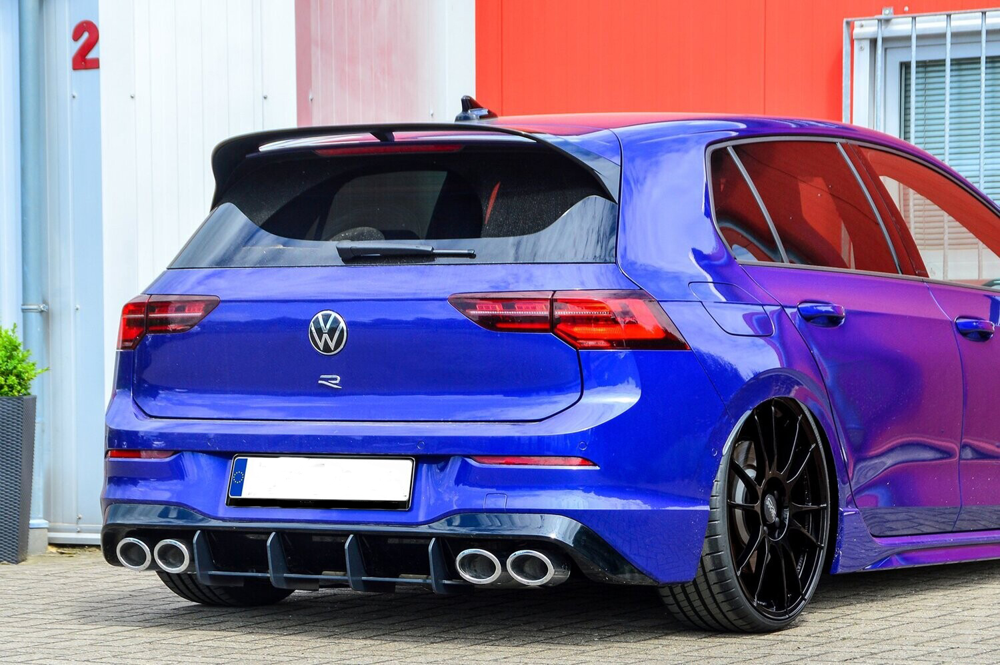
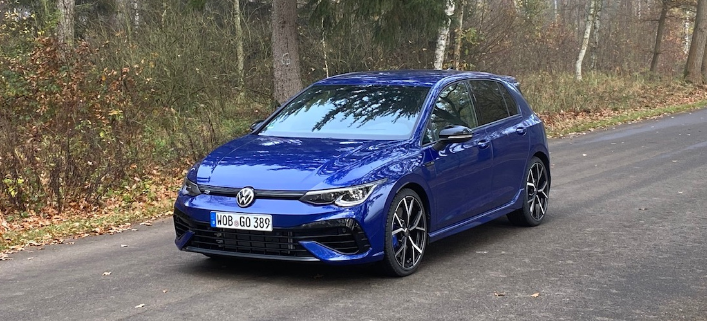

<div class="container-fluid">
	<div class="row">
		<div class="col">
			<h2> VW Golf R </h2>
			

			<p> Под капака на Golf R има 2,0-литров четирицилиндров двигател с турбокомпресор, който произвежда 315 конски сили и въртящ момент от 310 lb-ft - от 288 к.с. и 280 lb-ft в последното поколение R. Двигателят се съчетава с шест -степенна механична или седемстепенна автоматична скоростна кутия с двоен съединител. </p>

			
			
		</div>	
	</div>
</div>